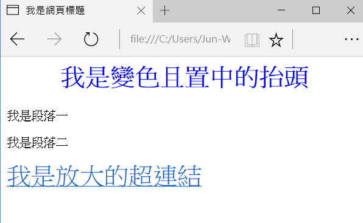

資料科學
給初學者的 Python 網頁爬蟲與資料分析
(2) 套件安裝與啟動網頁爬蟲
Read More
本節 beautifulsoup 範例程式, Beauty 板爬蟲範例程式
你在瀏覽器看到的美觀網頁，主要由三個部分構成: HTML (網頁的骨架結構)、CSS (網頁的樣式) 與 JavaScript (在瀏覽器端執行，負責與使用者互動的程式功能)。對於網頁或爬蟲的初學者來說，最重要的觀念是了解：網頁就是由各式標籤 (tag) 所組成的階層式文件，要取得所需的網頁區塊資料，只要用 tag 與相關屬性去定位資料所在位置即可。例如以下是一個簡單的網頁及其原始碼：

HTML 文件內不同的標籤 (例如 <title>, <h1>, <p>, <a> 有著不同的語義，表示建構網頁用的不同元件，且標籤可以有各種屬性 (例如 id, class, style 等通用屬性, 或 href 等專屬屬性)，因此我們可以用標籤 + 屬性去定位資料所在的區塊並取得資料。關於網頁架構還有另外一件事，就是它是階層式文件，例如以上的網頁架構可以如下表示
雖然在我們的範例中不會用階層結構去定位資料區塊，但知道這件事有助於你閱讀及理解網頁文件。
BeautifulSoup 是好學易用，用來解構並擷取網頁資訊的 Python 函式庫。給定以上的網頁文件，
先創建一個 BeautifulSoup 物件，將網頁讀入
接著就可以用 find(), find_all() 搭配 tag 名稱及屬性去定位資料區塊
find() 只回傳第一個找到的區塊，而 find_all() 會回傳一個 list, 包含所有符合條件的區塊。傳入的引數第一個通常是 tag 名稱，第二個引數若未指明屬性就代表 class 名稱，也可以直接使用 id 等屬性去定位區塊。定位到區塊後，可以取出其屬性與包含的字串值
如果你要取得的屬性不存在，直接使用屬性名稱會出現錯誤訊息，因此若你不確定屬性是否存在，可以改用 get() 方法
其他詳細用法可參考 BeautifulSoup 的官方文件
假設你有一個想爬的網頁，要怎麼知道資料區塊所在的標籤及屬性呢？在此我們使用 Chrome 的開發者工具，以 Ptt Web 版 Beauty 板首頁為例，用 Chrome 連上 https://www.ptt.cc/bbs/Beauty/index.html, 接著按下 F12 或從選單啟動開發者工具
下方會跑出開發者工具的操作區，點選左上角的箭頭按鈕後，再點擊網頁上你想要定位的資料區塊，該區塊的 HTML 碼就會顯示在下方。當然你也可以直接檢視網頁原始碼或檢視上一篇教學中用 get_web_page() 所取得的網頁文件，但善用開發者工具可以加速你的搜尋。
檢視網頁原始碼後我們知道，網頁上的每一篇貼文都是由 <div class="r-ent"> 的區塊包圍起來，裡面分別由 <div class="nrec"> 區塊顯示推文數，<div class="title"> 區塊及 <a> 區塊顯示文章連結及文章標題，<div class="date"> 區塊顯示發文日期
因此，若已經取得網頁文件，我們可以用 find_all() 找出所有<div class="r-ent"> 區塊，並逐一巡訪，取得資料：
使用 get_articles() 及上一篇教學的 get_web_page()，取得今日文章資訊
這樣就取得今天全部的 Beauty 板文章了嗎？聰明的你一定想到了：如果不只首頁，前一頁還有今天的文章怎麼辦？這就留給各位自行練習了 (提示：找到前一頁的連結，連線並取得該頁資料後，一樣用 get_articles 爬取文章資料)，我們會在教學結束後的範例提供完整程式碼。下一篇文章會說明如何連結到 current_articles 內的文章，抓圖並計算每一篇文章的貼圖數。
“Happy coding.”
文章也同步刊登在 Jun-Wei Lin blogs